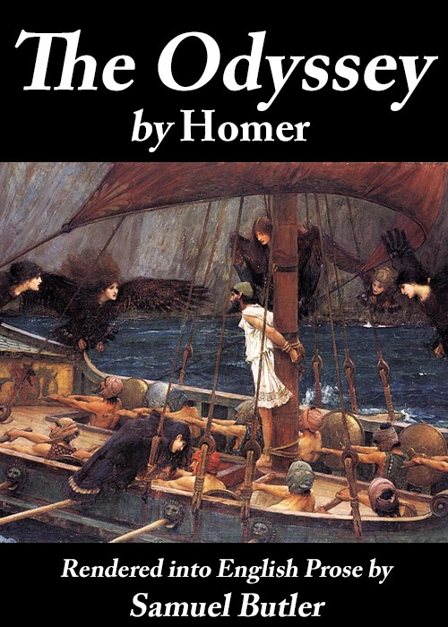

The Odyssey (Butcher & Lang translation)
الأوديسة
الأدب
ملك عام
ترجمة كاملة
أوديسة هوميروس كاملة في أربعة وعشرين كتابًا: عودة أوديسس من طروادة، بينيلوب الخطّاءة، تليماك، الساحرة كيركي، مغامرات البحر، ومنافسة القوس — الملحمة المؤسسة للملاحم الغربية.
| المؤلف | هوميروس (ترجمة باتشر ولانغ) — Homer (translated by S. H. Butcher and A. Lang) |
| سنة النص الأصلي | ق٨ ق.م |
| كلمات المصدر (الإنجليزية) | ١٢٣٥٢٨ |
| كلمات الترجمة (العربية) | ٩٨٤٩٧ |
| مقاطع الترجمة المدققة | ٦٩ |
| مدة القراءة التقريبية | ≈ ٢٢٤٠ دقيقة |
الترخيص والحقوق: النص الأصلي (ترجمة باتشر ولانغ) في الملك العام (غوتنبرغ #1727). هذه الترجمة العربية منشورة بإذن حر.